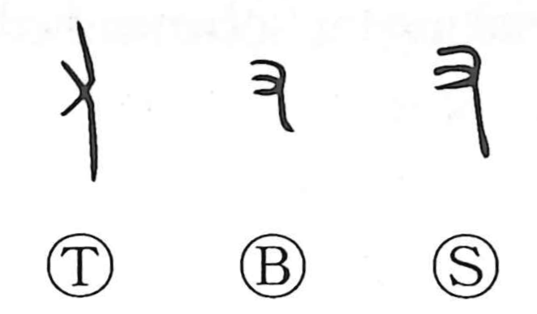

又

Kun: mata | On: u, yuu
again ・ also
Explanation
This character began as a pictograph of a right hand with its fingers extended, and in that sense it was the original graph later differentiated as 右 “right.” In oracle-bone and bronze inscriptions it often functions with the sense of “to have, to exist,” a usage that aligns with 有. Over time its everyday meanings shifted toward “again” and “twice,” and it could also convey the idea of “to help.” Once 右 was established for the specific meaning “right,” this graph carried the newer senses, while its counterpart for the left hand was the form ナ, which became the basis of 左.